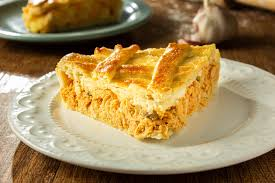
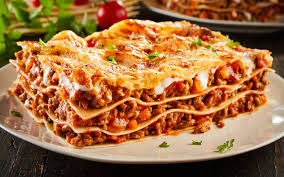

Home Receita 1 Receita 2 Receita 3
Sua próxima refeição inesquecível está no Receitas do Edu! Dicas exclusivas, segredos culinários e as receitas mais pedidas da internet com o toque especial do Edu. O tempero que faltava na sua rotina está a um clique de distância. Receitas do Edu: Cozinhar nunca foi tão gostoso!

Torta de Frango Cremosa: o clássico que abraça o paladar. Imagine uma massa leve que derrete na boca, recheada com um frango desfiado suculento, temperos frescos e aquele toque de requeijão que faz toda a diferença. Dourada por fora, irresistível por dentro!

Camadas de puro prazer e queijo puxante! Imagine lâminas de massa artesanal intercaladas com um molho bolonhesa encorpado, cozido lentamente, e aquele molho branco aveludado que traz a cremosidade perfeita. Tudo isso coberto por uma camada generosa de queijo gratinado, formando aquela crostinha dourada e crocante nas bordas. O segredo: Cada garfada é uma explosão de temperos frescos e texturas que se fundem. É o verdadeiro sabor de um almoço inesquecível, servido fumegante e direto para a sua mesa!
A crocância perfeita encontra o recheio dos deuses! Imagine uma massa ultra macia e saborosa, envolvida por uma casquinha dourada e sequinha que faz aquele "croc" inesquecível. Por dentro? Um frango desfiado temperado com perfeição e uma cremosidade que derrete na boca.